|
|
|
Browsing
Contact Us |
Campaigners |
Face to Face |
Tribune |
Interview |
News |
On the Web |
One Million |
Report
Farsi | Français | German | Italian | Spanish | العربية Also in this section
|

A Report of the Campaign in Photographs—Year TwoSunday 7 September 2008 Change for Equality: The following is a documentation of the Campaign’s activities in year two captured through photographs. The Campaign has been successful in engaging activists around the country, despite having extremely limited resources and despite intense security pressures intended to limit the spread of the Campaign. These photographs are a testament to the courage and commitment of the activists involved in the Campaign and their determination in working to reform laws that discriminate against women. The Report of the Campaign in Photographs, covering Year 1 of activities was published earlier. Pictures for both these reports were provided by Raheleh Asgharizadeh, Aida Saadat, and Parvin Ardalan and other members. August 27, 2007: Celebration of the first anniversary of the Campaign in Rasht
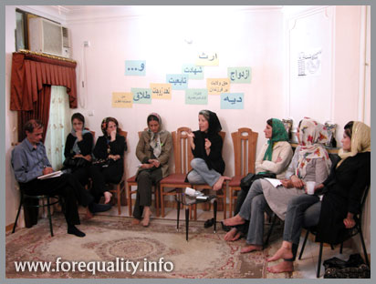
August 30, 2007: Celebration of the first anniversary of the Campaign in Shiraz
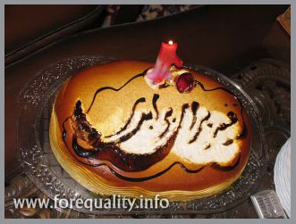 September 1, 2007: Celebration of the first anniversary of the Campaign in California
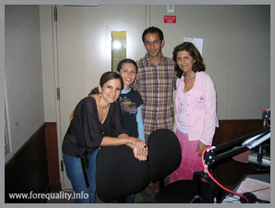 September 2, 2007: A meeting of Campaign activists with social activists in Babol
September 3 2007: A meeting analyzing the impact of the proposed Family Protection Bill on women, families and society. This meeting was the first protest meeting held in relation to the proposed and controversial Bill. A statement objecting to the Bill was drafted and initial signatures in support of the Bill were collected during this meeting. Read about the statement signed by 2000 equal rights defenders.
September 5. 2007: Roundtable on the Campaign’s Activities in the Provinces, held in honor of the first anniversary of the Campaign, in Kermanshah.
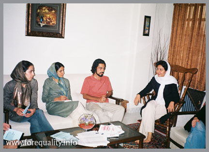
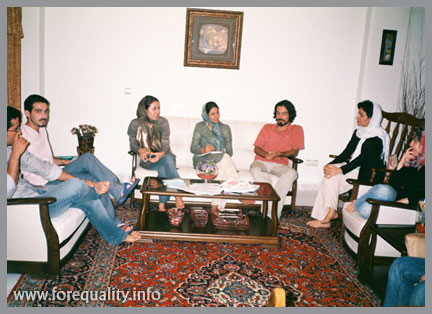 September 8, 2007: The Campaigns official site, Change for Equality, was blocked for the Seventh time, on order of the Judiciary.
September 11, 2007: The Arts Committee of the Campaign begins activities. In the year since its inception, this Committee, drawing upon the talents of its young members, has come up with innovative strategies to reach out to the public. They have done this through designing pins, documenting the activities of the Campaign through photos and film, developing videos, developing stickers with the message of the Campaign for use across the country, making t-shirts, producing anthems and podcasts, organizing plays addressing legal issues taken up by the Campaign, to name a few strategies. Through the efforts of this committee, use of art as a means for protest and reaching out the public has become a regular strategy for all campaign activists.
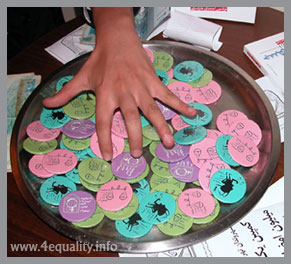 September 11, 2007: A concert held by Qashqaie Tribal women in support of the Campaign. This was the first event organized by the Arts Committee. The event was planned in collaboration with the Public Relations Committee of the Campaign.
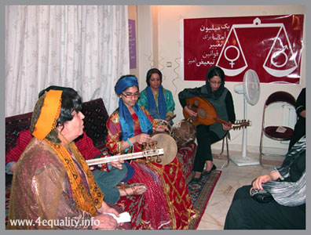 September 13, 2007: Twenty-five members of the Campaign are arrested during a training workshop in Khorram Abad. Read about it.
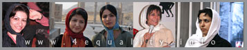 September 22, 2007: Meeting of Campaign activists from different cities.
September 25, 2007: Arrests reach Kurdistan Province. Ronak Safazadeh, a 21 year old women’s rights activist, was arrested following a meeting on children’s rights and her collection of signatures in support of the Campaign and remains in prison still. Read the news on the arrest of Ronak and Hana Abdi
October 11, 2007: The site of the Men’s Committee of the Campaign is officially launched
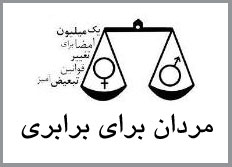 October 20, 2007: The Campaign in California celebrates Mehregan, a traditional Iranian celebration of the Fall season.
October 23, 2007: Hana Abdi, 21, women’s rights activist and member of the Campaign arrested in Kurdistan. She has since been sentenced to serve 5 years in prison in exile in the City of Garmi in West Azarbaijan province. Read the interview with Dr. Sharif, the lawyer representing Hana for more information on her case.
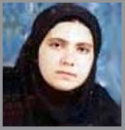 November 4, 2007: Delaram Ali sentenced to two years and six months mandatory prison sentence through an appeals court ruling in relation to her participation in the June 12, 2006 protest in Hafte Tir Square. During this protest, Delaram was violently beaten by police and as a result suffered a broken arm. She lodged a complaint against police, but courts acquitted the police officers involved in this case. Delaram spent one week in detention after her arrest on June 12, 2006. Following the appeals court ruling, the office for implementation of sentences contacted her informing of the implementation of her prison term. Following an outcry by women’s rights activists, and her own appeal to the Judiciary, Ayatollah Shahroudi, the head of the Judiciary ordered a temporary stay in the implementation of her sentence. The case remains in the process of judicial review.
November 18, 2007: Arrest of Maryam Hosseinkhah, journalist, women’s rights activist and member of the Campaign. Maryam was arrested in relation to her activities on the site of the Campaign, Change for Equality and Zanestan, the webzine of the Women’s Cultural Center. She spent 45 days in detention in relation to this case. Maryam Hosseinkhah, Parvin Ardalan, Nahid Keshavarz and Jelve Javaheri were all charged with actions against national security, through the spread of propaganda against the state, and sentenced to 6 months mandatory prison sentence. Then intend to appeal the court ruling.
December 1, 2007: Jelve Javaheri, women’s rights activist and Campaign member, was arrested on similar charges to that of Maryam Hosseinkhahs. She spent 30 days in prison.
January 2, 2008: Maryam Hosseinkhah and Jelve Javaheri were released from Evin Prison after spending 45 days and 32 days in prison respectively. http://www.forequality.info/english/spip.php?article200
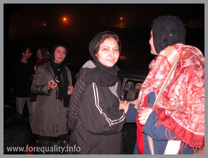
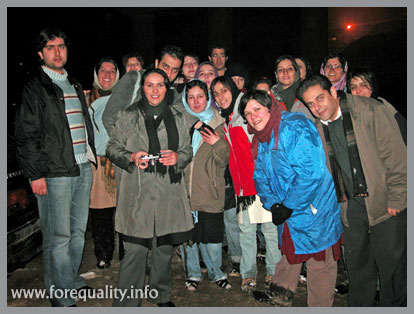 January 21 2008: Women’s rights training held for Campaign members by the Organization for Human Rights Defenders. Shirin Ebadi and Dr. Abdol Fateh Soltani conducted this training.
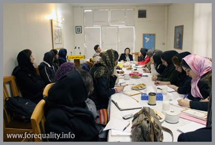 February 14, 2008: Campaign members, Raheleh Asgharizadeh and Nasim Khosravi arrested while collecting signatures in support of the Campaign in Daneshjoo Park.
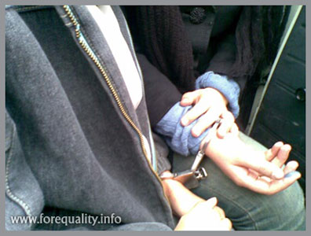 February 17, 2008: The One Million Signatures Campaign, featured by AWID.
February 26, 2008: Raheleh Asgarizadeh and Nasim Khosravi released from Evin Prison.
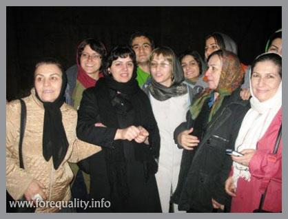 March 4, 2008: Campaign members hold meeting to assess opportunities and threats facing the movement. The meeting was held in the home of one of the members of the Mother’s Committee of the Campaign.
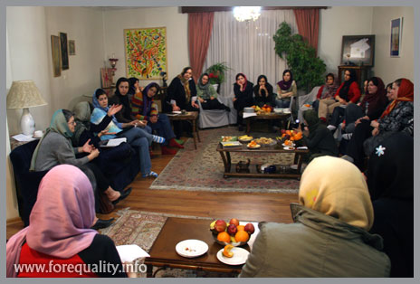
March 12, 2008: The Campaign’s Arts Committee stages a play on the life of Raheleh Zamani, a female prisoner who was executed. This play, "No Swinging Allowed!: Images from the Life of Raheleh Zamani, who did not Wish to Die" was directed by Azadeh Faramarziha. Read about the play.
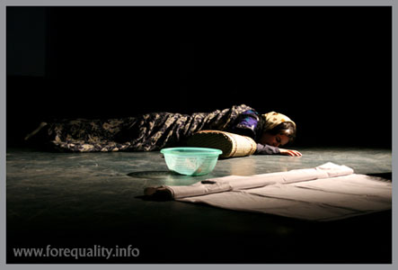 March 15, 2007: Campaign members in California celebrate International Women’s Day
March 16, 2007: Campaign activists celebrate International Women’s Day in Tehran. This event, which was planned by the Public Relations Committee, included a speech by Shirin Ebadi, reports from members of the Campaign in the provinces, a report from the men’s committee of the Campaign, several reports and presentations on structural issues of the Campaign and on how activists should organize the movement and presentations by members of the Arts Committee. Activists also used this opportunity to celebrate the Olaf Palme Human Rights awarded to Parvin Ardalan, a long time women’s rights activist and a founding member of the Campaign. Ardalan was prevented, by security forces at the last minute, from attending the ceremony held in her honor by the Olaf Palme Foundation.. Also, read the news about Ardalan’s award
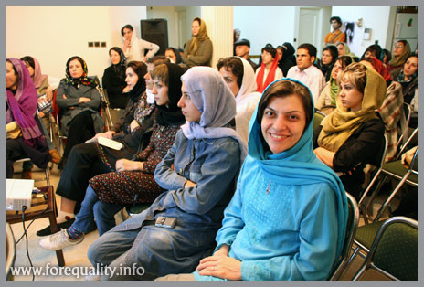 April 8, 2008: Khadijeh Moghaddam, member of the Mothers Committee of the Campaign arrested on charges of hosting meetings of the Campaign in her home.
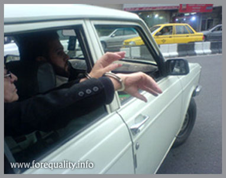 April 16, 2008: Khadijeh Moghaddam released from prison.
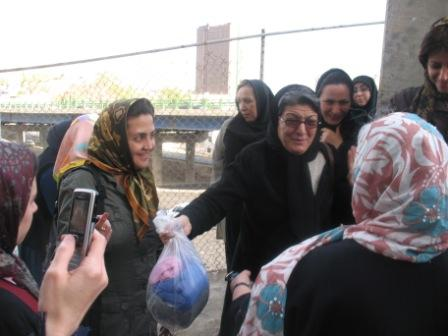 April 25, 2008: The fifth training workshop for women’s rights activists held by Campaign members in Karaj
April 29, 2008: Meeting between Campaign activists from Tehran and Mashad, held in the city of Mashad.
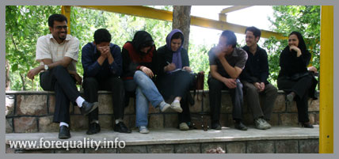
May 25, 2008: Amir YaghoubAli Sentenced to one year mandatory prison sentence. An appeals court ruling reduced the sentence to a suspended sentence of one year, requiring Amir to report to authorities of the Intellengence Ministry every four months for the period of four years. If Amir fails to report to intelligence officials or is found guilty of a crime during these four years, his one year sentence will be implemented. According to his lawyer, Nasrin Sotoodeh, this level of supervision and control of a social activist by the security forces and courts is unprecedented. Read about this ruling. Amir is the first man to be sentenced to prison in relation to activities in support of women’s equal rights. Read the interview with Amir on his arrest and the reason why he is involved in the Campaign and advocates for equal rights of women.
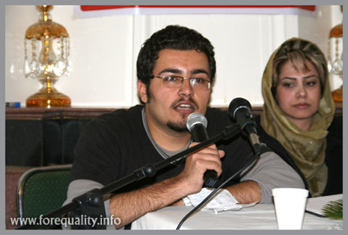 June 13, 2008: Nine women’s rights activists arrested, after the seminar on the occasion of the Day of Solidarity of Iranian Women in opposition to legal discrimination, was broken up by security forces. Aida Saadat, Nafiseh Azad, Jila Baniyaghoob, Farideh Ghaeb, and Sarah Loghmani have been charged with disrupting public order and disobeying the orders of police in relation to this case, and are free pending trial on a third party guarantee in the amount of 50 Million Tomans (roughly $55,000). The others arrested on that day, Nahid Mirhaj, Nasrin Sotoodeh, Jelve Javaheri, and Alieh MotalebZadeh have yet to be charged. Those arrested were released later the same day.
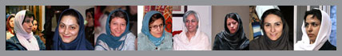
June 19, 2008: The map of the Campaigns centers in Iran and around the world is developed by activists in California.
August 8, 2008: Hanibal Alkhas, renowned artist, supports the Campaign and the quest for equality of women, by holding an art exhibit in honor of the Campaign.
August 28, 2008: Campaign activists celebrate the second anniversary of the Campaign, despite pressures intent on preventing this celebration by security forces. Earlier in the day, the Campaign’s celebration of its second anniversary which was to be held in the home of Mahboubeh Karami, was disrupted and broken up by security forces, who threatened to arrest all those present at the event. Campaign activists had used the opportunity of Mahboubeh’s release from prison after 70 days in detention, to not only visit with her, but to celebrate the second anniversary of the Campaign. After this event was broken up, despite intense security pressures, some of the activists involved in the Campaign, gathered in the home of one of the members to hold a celebration. Because of the threat of arrest and security pressures, many of the Campaign members were unable to attend this celebration.
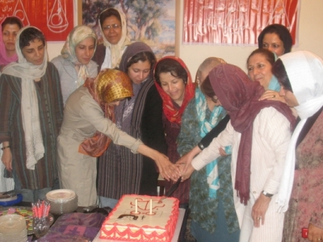
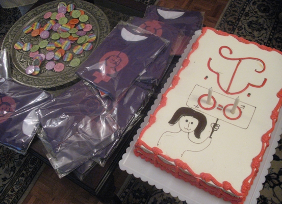 Despite all these difficulties, activists remain committed to the cause of the Campaign and its aims. Stay tuned for more information on our activities in year three of the Campaign. |